NVIDIA HIGHER EDUCATION & RESEARCH · SEPTEMBER 2026
Idle GPUs → Campus AI
Serving open models on a university's own NVIDIA GPUs with NVIDIA Dynamo. Every number on this page was
measured on one 8 × B300 node with Qwen3.5-122B-A10B (NVFP4) and Dynamo 1.5.0, from cold caches, changing one
feature at a time.
+51%
output tokens/s per GPU from KV-aware routing (multi-turn agent sessions, 64 concurrent)
1.8×
faster first token from KV-aware routing (70% vs 34% prefix-cache hits)
7–22×
smoother token streaming (ITL p99) with disaggregated prefill/decode on 64K-token prompts
4×
more throughput per B300 after upgrading Dynamo 1.3 → 1.5 (hybrid-model fix)
Where this fits: campus lab → AI factory
Students learn the same serving layer that runs NVIDIA's production inference stack. Only provisioning and orchestration differ.
OpenAI/Anthropic-compatible frontend, a KV-aware router with a global view of every worker's cache, and engine workers (vLLM, SGLang, TensorRT-LLM) that can split prefill from decode.
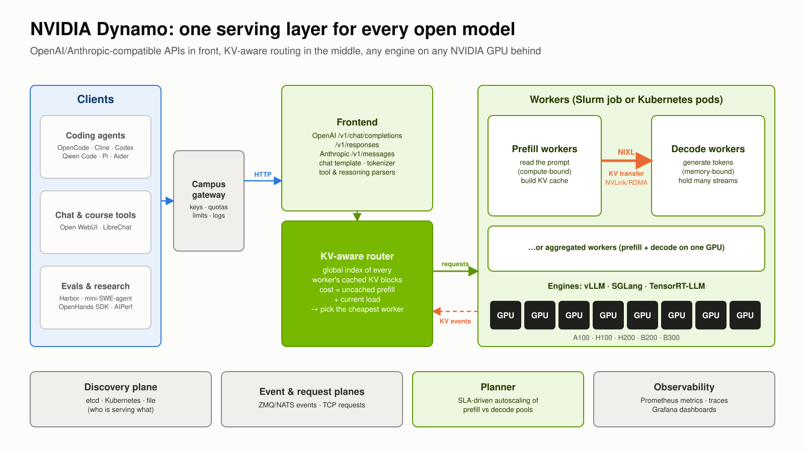
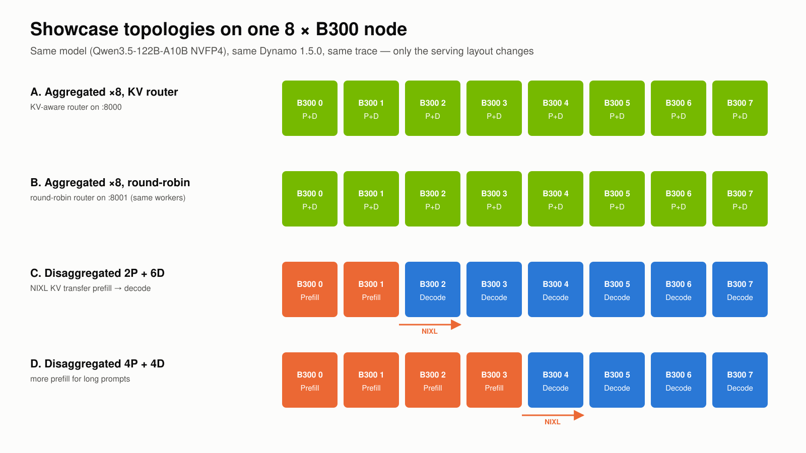
Anatomy of one request
Prefill (reading the prompt) sets time-to-first-token and is compute-bound. Decode (writing tokens) sets tokens/s and is memory-bandwidth-bound. Every Dynamo feature targets one of the two.
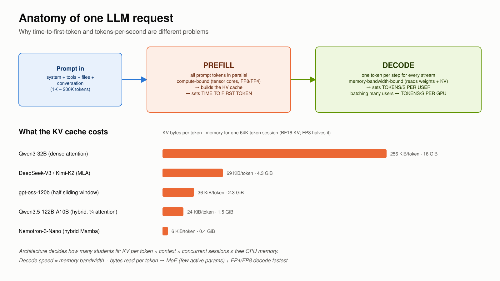
Feature 1 · KV-aware routing
Coding agents resend the whole conversation every turn. The router sends each request to the worker that already holds its prefix, so prefill becomes a cache lookup.
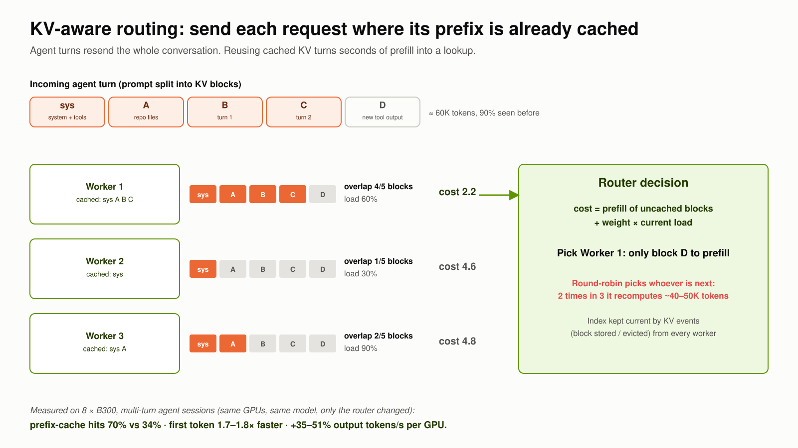
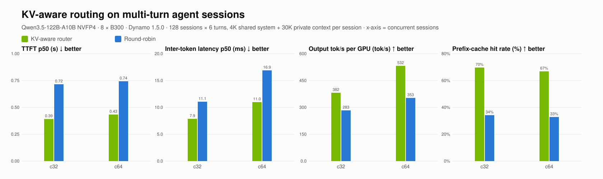
Same 8 workers, two frontends (KV-aware :8000, round-robin :8001). 128 sessions × 6 turns, 30K private context each.
Result: cache hits 67–70% vs 33–34%, which gives +35–51% output tokens/s per GPU, 1.7–1.8× faster first token and 1.4–1.5× faster requests. Only the router changed.
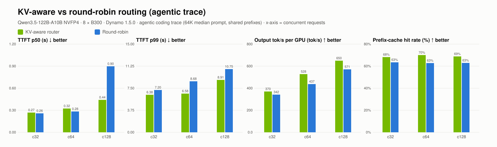
NVIDIA agentic coding trace (median 64K-token prompts). Reuse here is dominated by 4 shared system prefixes, so gains are smaller: +8–21% tokens/s/GPU and a 13–32% better TTFT p99.
Trade-off: routing to cache-hot workers concentrates load, so ITL was 11–26% worse on the trace. Router knobs (overlap credit, temperature, load weight) tune cache affinity against balance.
Feature 2 · Disaggregated prefill / decode
Separate GPU pools for prefill and decode, with KV cache moved between them by NIXL over NVLink or RDMA. Long prompts no longer stall token streams, and each pool can be sized independently.
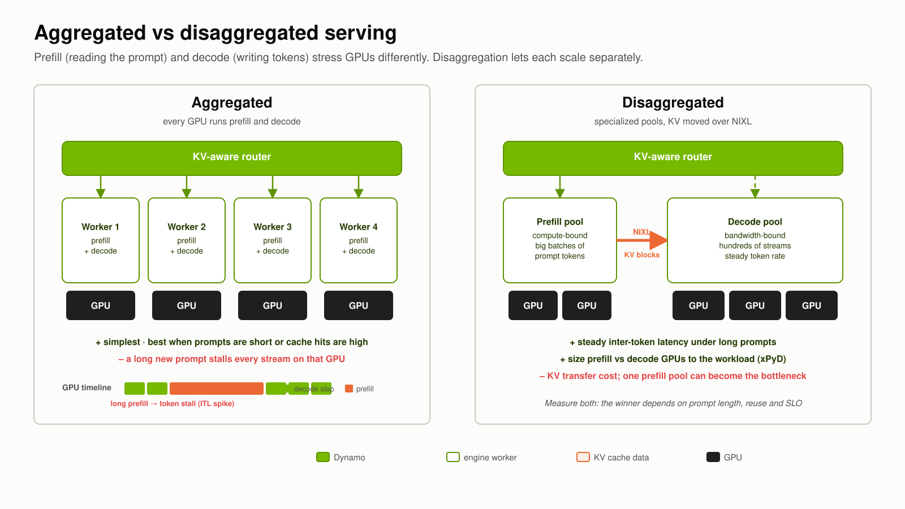
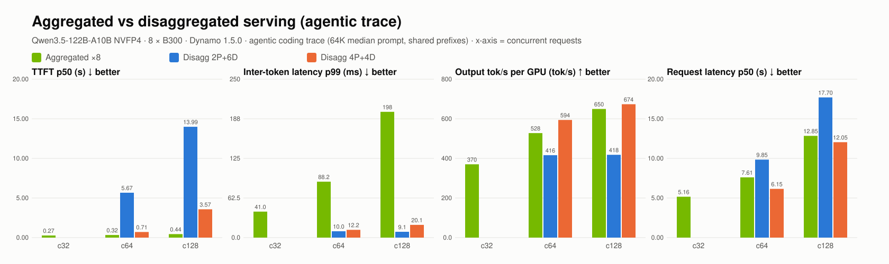
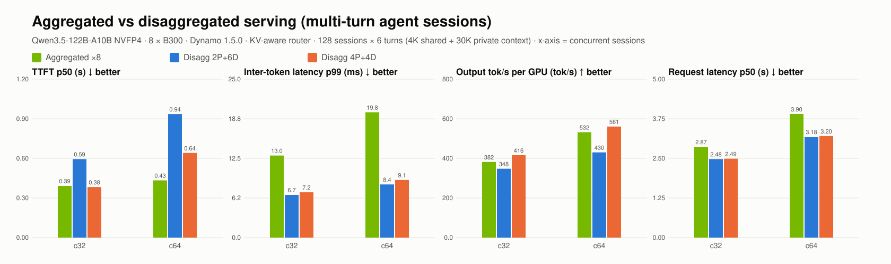
Result: with the right ratio (4 prefill + 4 decode), disaggregation beats 8 aggregated replicas on throughput (+4–12% trace, +5–9% sessions) and request latency (up to 19% faster), with a 7–22× smoother streaming tail.
Trade-off: with too little prefill (2P + 6D), 64K-token prompts queue: TTFT reached 5.7–14 s and throughput fell 21–36%. Sizing the pools is the job of Dynamo's SLA planner, or of a sweep.
Feature 3 · Conditional disaggregation
A 1.5 router policy (experimental): requests whose uncached prefill is small, such as cache-hit agent turns, skip the prefill pool and run on the decode worker that already holds their KV. Cold, long prompts still go to prefill.
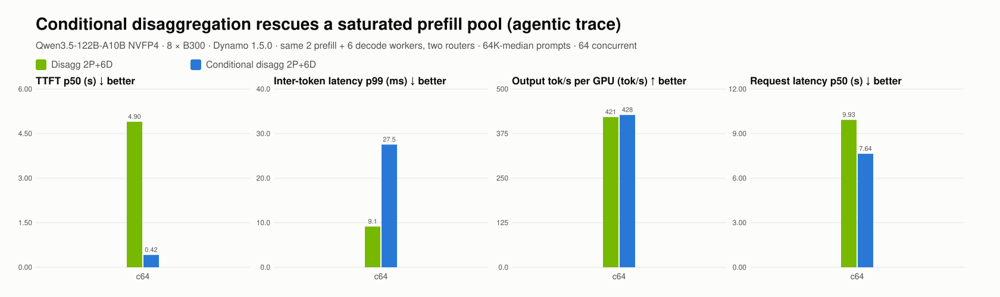
Result: with a saturated 2-GPU prefill pool, conditional routing cut TTFT p50 from 4.9 s to 0.42 s (11.7×) and request latency by 23%. 860 cache-hit requests were prefilled locally on decode GPUs.
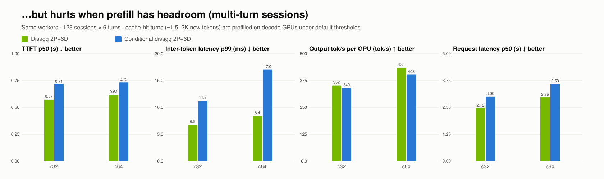
Trade-off: when prefill has headroom, the default thresholds made things worse: ITL p99 up to 2× and requests 18–22% slower, because decode GPUs took on prefill work. It is experimental upstream; tune the thresholds to your workload.
Feature 4 · Multi-model serving and the post-training loop
One Dynamo endpoint served two models at once: the Nemotron 3.5 Lightning teacher and a pruned student from the campus prune → distill experiment. Clients pick one per request.
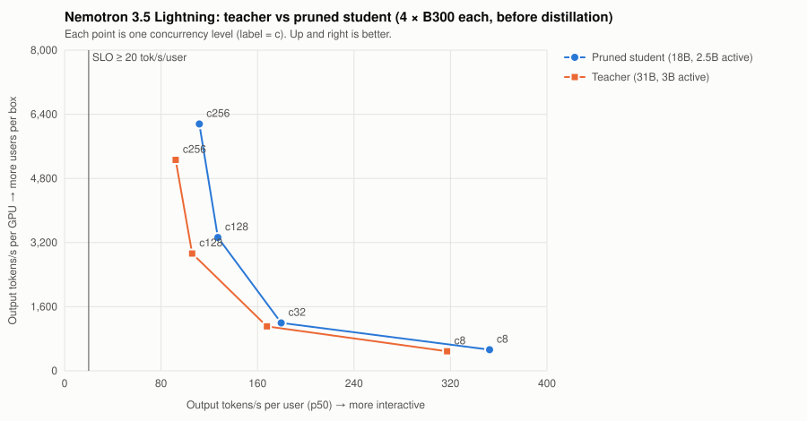
Speed: the pruned student (18B total / 2.5B active) delivered +8–17% throughput per GPU and 11–21% faster per-user decode with a 45% smaller checkpoint.
Quality: before distillation the student degenerates ("code code code…") while the teacher writes a correct function. Prune, then distill, then evaluate, and only then serve. That sequence is the NeMo post-training loop.
Stability is part of performance
On Dynamo 1.3.0 (vLLM 0.23), hybrid DeltaNet models stopped returning tokens at about 7–8 concurrent requests while the GPUs sat half idle. Controls isolated the engine version, and 1.5.0 fixed it.
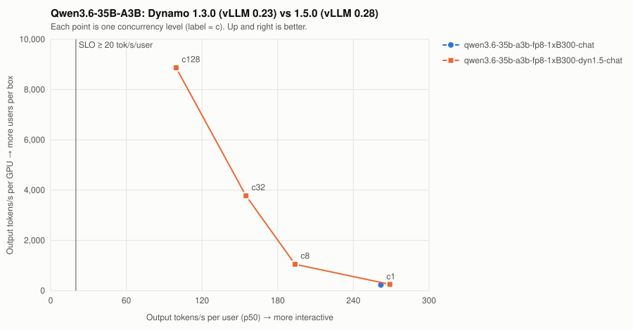
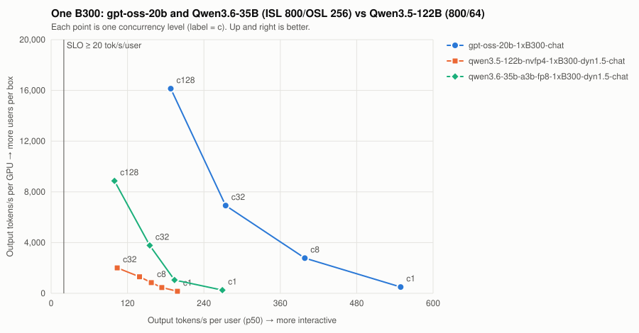
Lesson: sweep until failure, record the engine version with every number, and cap gateway concurrency below the measured cliff.
Running it as a campus service
Preemptible Slurm serving so research always wins, per-course keys and quotas at a gateway, opt-in traces only.
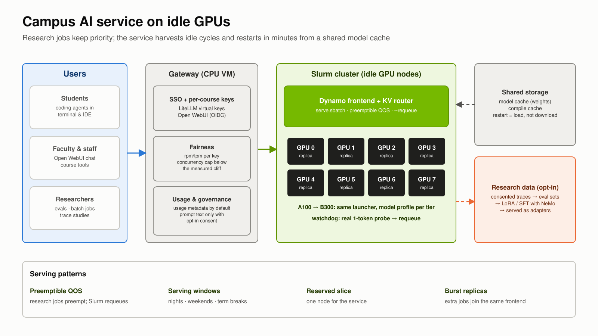
From usage to campus-tuned models
Consented traces become evaluation sets, then LoRA/SFT/GRPO with NeMo, then adapters served by Dynamo. The Nemotron prune → distill → FP8 lab is the B300 starting point.